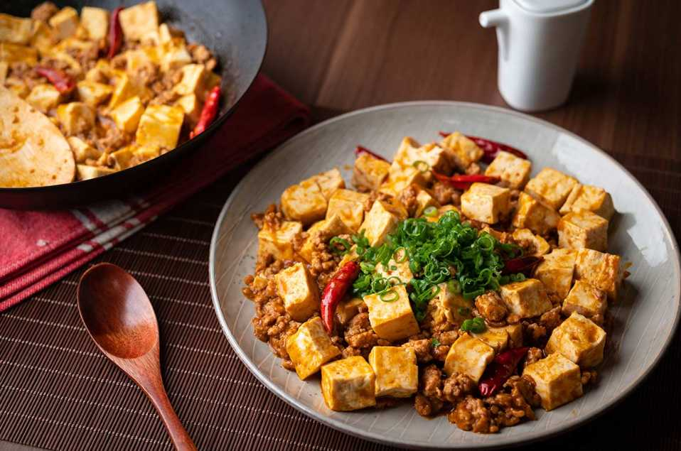

Mapo Tofu
Description
Mapo Tofu is a popular Chinese dish from the Sichuan province. It is a spicy and aromatic dish made with tofu, minced meat (usually pork or beef), fermented black beans, and chili paste. It is known for its unique combination of flavors, including the numbing sensation of Sichuan peppercorns and the heat from chili peppers. Mapo Tofu is often served with steamed rice and is a favorite among spicy food enthusiasts.
Difficulty: Moderate
Time to Make: 30 minutes
Ingredients
- 1 block (14 oz) firm tofu, cut into small cubes
- 150g ground pork or beef
- 2 cloves garlic, minced
- 1 tablespoon ginger, minced
- 2 tablespoons fermented black beans, rinsed and chopped
- 2 green onions, sliced
- 2 tablespoons chili bean paste
- 1 tablespoon soy sauce
- 1 teaspoon sugar
- 1 cup chicken or vegetable broth
- 1 teaspoon Sichuan peppercorns, toasted and ground
- 2 tablespoons vegetable oil
- 2 teaspoons cornstarch mixed with 2 tablespoons water (optional, for thickening)
Steps:
- Heat the vegetable oil in a wok or skillet over medium heat. Add the minced garlic and ginger, and stir-fry until fragrant.
- Add the ground pork or beef to the wok and cook until browned.
- Add the fermented black beans, chili bean paste, soy sauce, and sugar to the wok. Stir well to combine.
- Add the tofu cubes and chicken or vegetable broth to the wok. Gently stir to coat the tofu with the sauce.
- Simmer for about 10-15 minutes, until the tofu is heated through and the sauce has thickened slightly. If desired, add the cornstarch mixture to further thicken the sauce.
- Remove from heat and sprinkle with sliced green onions and ground Sichuan peppercorns.
- Serve hot with steamed rice.